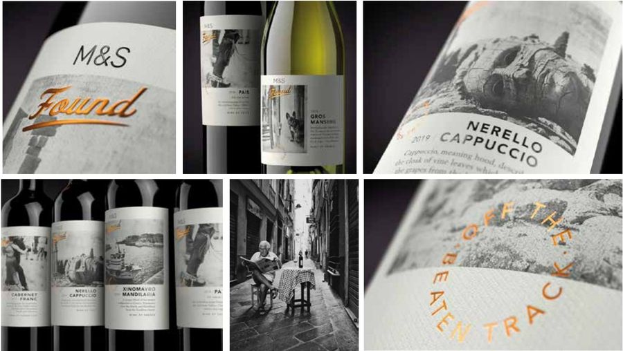
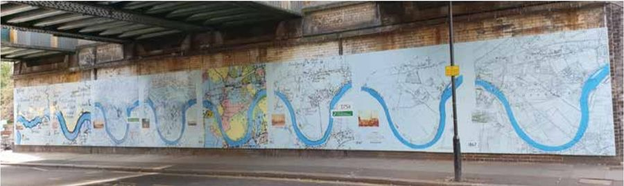
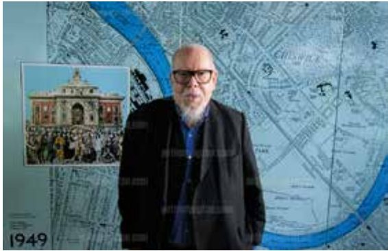
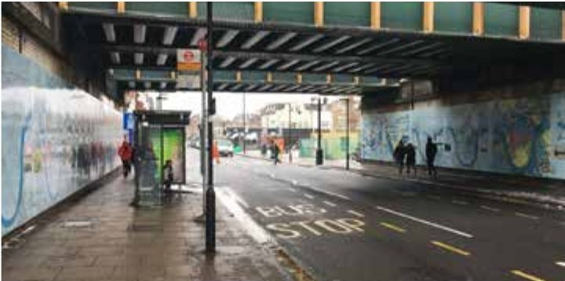
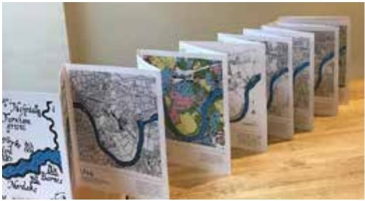
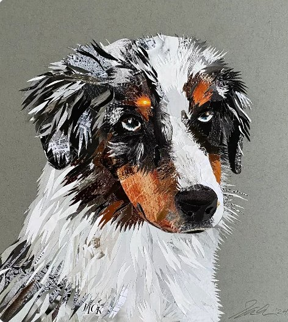
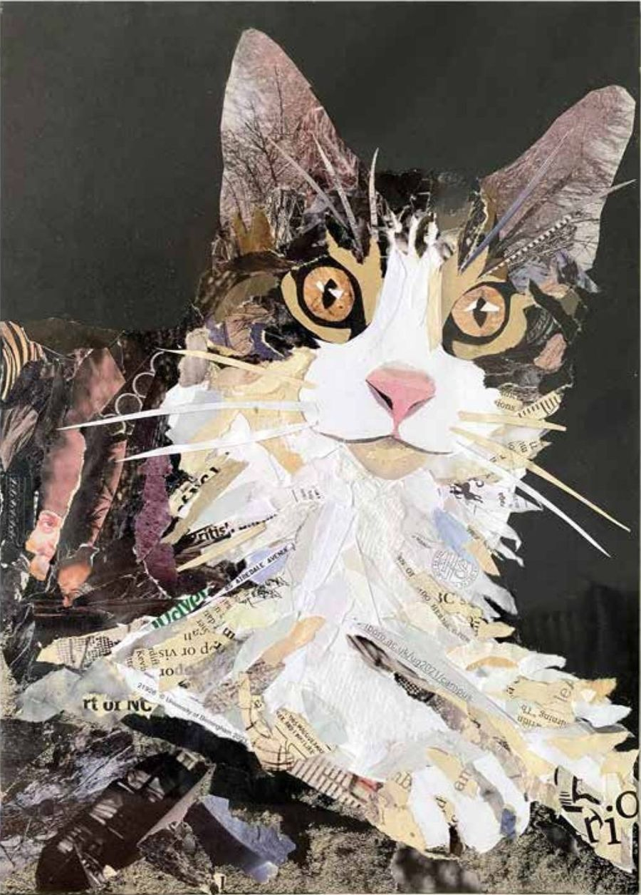

1. The Wine List
1. The Wine List 2. The Shelf
2. The Shelf 3. Front and Back
3. Front and Back 5. Cut Paper
5. Cut PaperBrand strategy · Identity · Packaging · Illustration
Sarah Cruz
Creative Director, Consultant, Designer, Illustrator. Animal lover, salsa dancer, mother of two.
More than 25 years of brand strategy, brand identity and packaging design, with a speciality in wine and spirits, for retailers, independent producers and global brands.

Retailer exclusives
Own label ranges for Marks & Spencer, Tesco, The Wine Society and Spar.
- M&S FoundNaming, Brand creation, Label design, Range extensionThe Drinks Business Awards 2022
- M&S premium winesBrand creation, Label design
- Tesco core rangeDesign direction, Naming, Label design of many wines
- Tesco FinestDesign direction, Brand identity, Label design of many winesHarpers Design Awards 2023, Silver
- Wairau CoveBrand world, Brand identity, Label design
- The Wine Society own brandLabel design, Range extensionHarpers Design Awards 2023, Best Redesign
- The Wine Society Generation SeriesLabel design, Range extension, Collage illustration
- Spar varietalsLabel design, Range extension
Independent brands
Winemakers with a story, and the labels that tell it.
- McGuigan ZeroStrategy, Brand creation, Label design, Range extension
- Maid of BrutonBrand creation, Label design, Illustration
- IdentityBrand world, Brand identity, Label design, Illustration
- PepperBoxBrand creation, Label design, Illustration
- Vina LagunaBrand creation, Label design, Illustration, TieringDBA Design Effectiveness Awards winner
- AshdownBrand creation, Label design, Illustration
- Pol Roger canned wineNaming, Brand creation, Packaging design
- GenetieBrand world, Brand identity, Label design, Illustration
- ValdiviesoLabel design, Range extension, Tiering
- And many more
Spirits
Gin, whisky and snaps.
- Warner EdwardsBrand strategy, Label design, Structure, Range extensionDBA Design Effectiveness Awards winner
- GlenmorangieBrand strategy, Icon creation, Label design, Range extensionWine and spirit design awards: winner, gold and silver
- Johnnie Walker Directors BlendConcept, Label design, Illustration, Range extension
- Snaps & RyeConcept, Label design
Packaging design
Characters, colour and craft for things people pick up.
- Royal Ascot × TisserandConcept, Label design, Illustration
- Honey I'm Home!Packaging design, Character creation, IllustrationDBA Design Effectiveness Awards winner
- DivinoPackaging design, Icon designPentawards winner
- FwipBrand naming, Logo design, Brand identity, Packaging
- Trust Water for The Drinks TrustLabel design, Illustration
- Superdrug B.Packaging design
Corporate identity
Brands people meet in airports, high streets and racecourses.
- GatwickBranding concept, Copywriting, Identity design
- MonoprixLogo concept, Identity design
- WeatherbysIdentity design
The Chiswick Timeline
A history in art and maps, under a railway bridge.






The Timeline is created from 16 enormous maps of the area, dating from 1592 to today, overlaid with works of art by renowned artists showing local landmarks. This includes two specially commissioned artworks by Sir Peter Blake and Jan Pienkowski.
The legacy of the mural includes the upgrade to the surrounding area, the creation of a local artist's trail and writer's trail, educational tours and even council right-of-way decisions. "I love to bring history to a new audience through design."
Sarah is the co-founder and was co-director of Abundance London from 2010 to 2020, a voluntary organisation in Chiswick that harvests surplus fruit and plants orchards, hedgerows and gardens, and creates beautiful spaces through planting and through art.
- Co-creator
- Map timeline concept
- Research
- Fundraising
- Mural design
- Artwork and production
- Launch event
- Merchandise
- Associated projects
Cut paper portraits
"Instead of making sourdough during lockdown I decided to do animal portrait collages made from cut and torn paper."




The portraits are all hand made using only cut paper, and can include personalised memorabilia within them. Sarah is open to commissions: see cruzandcruz.co.uk.
Take the Sniff Test
A concept for Butternut Box.
A creative task set while interviewing for the in-house role of Head of Creative at Butternut Box. Sarah spent a day on it. The insight: fresh dog food smells as good as it tastes, yet no one was communicating smell until the box arrived. This is interview work, not a commissioned campaign.


"Strong brand insight: Sarah's focus on the sensory aspect of smell as a key differentiator for Butternut Box is both creative and insightful." Feedback from Butternut Box
About Sarah
"I have 25+ years experience in Brand Strategy, Brand Identity, Packaging and much more." Most recently Sarah specialised in wine and spirits design as Creative Director of Barlow & Co.
"I have been fortunate enough to spend most of my career designing on an almost daily basis so I would class myself as prolific. I'm not ready to hang up my pencil but I am open to roles in which I can advise strategically, mentor and direct the design process in an innovative, effective and agile way. I especially enjoy mentoring young designers."
"For over 10 years I have founded and led several local projects committed to improving our community in West London. I believe passionately in giving back to the community."
- Creative Director, Barlow & Co
- Formerly at Lewis Moberly
- Co-founder, Abundance London
- Co-creator, The Chiswick Timeline
- Graphic designer, Chiswick Cheese Market
- West London
Also: a redesign of Terra Nostra for Bel Portugal, a famous Portuguese national brand, made with colleagues at Lewis Moberly, which included meetings in the Azores.
Contact
For creative direction, design consultancy, mentoring or a cut paper portrait commission, find Sarah on LinkedIn or through Cruz & Cruz.